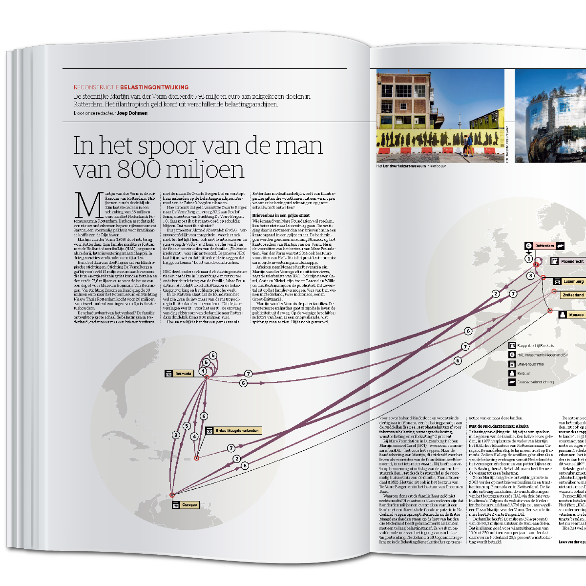
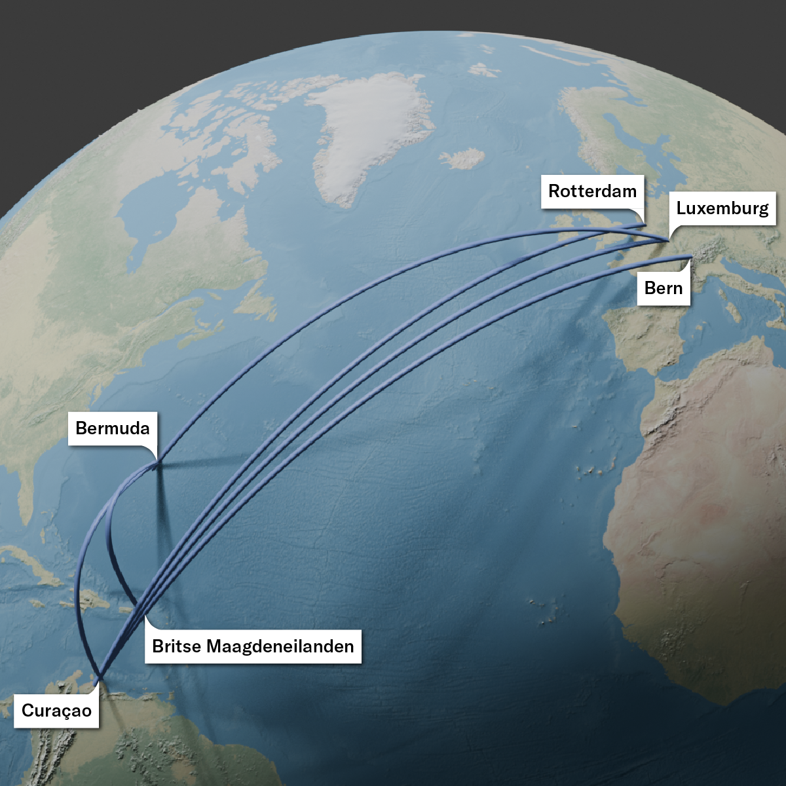
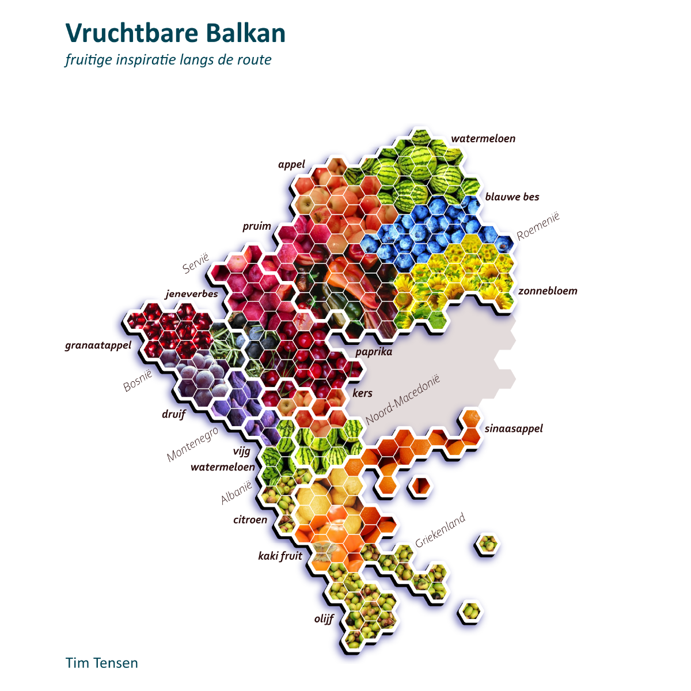

Drones over The Hague
Research collective SPIT obtained data on all drone flights over the city of The Hague. I visualised this data in 3D. I mapped where and how often drones appear and showed how many of these flights take place in prohibited or sensitive areas. The article was published in the weekly newspaper Den Haag Centraal.
Visualisation of the drone that flew over the embassy district in The Hague.
The drone that flew over the Binnenhof, the Ministry of Defence and Noordeinde Palace.
The remarkable route of a drone above the Peace Palace.
The journey of second-hand clothing
What happens to the second-hand clothing you donate? Follow the Money investigated by placing GPS tags on garments in collection containers. For this article I showed how second-hand clothing travels the world and how this apparently circular chain actually leads to extra emissions and complex opaque routes.
Animation accompanying the article in which I show the journey made by the tagged clothing. Many of these tags end up outside the EU. We follow one garment to a free zone in Pakistan.
Charts telling the broader story of textile production and the export of used clothing.
Video project Latin America
2 3 4 za
2 3 4 za2
The route of tax evasion
How philanthropic money from the Rotterdam Van der Vorm family travels the world via tax havens and shell companies. Using locations and company names from trade registers I was able to map the route of the money.

Visualisation of the route the money took before being offered back in the Netherlands as a philanthropic gift. Published in NRC.

The same route visualised in 3D.
Balkan road trip
In 2022 my girlfriend and I set off on a trip to the Balkans and back. I made our journey insightful.

Which countries did we visit and how long did we stay in one place? Did we sleep on a mountain top, at the beach or in the forest, and how many kilometres did we drive per day?

Driving through the different countries the variety of fruit stood out. One moment nothing but watermelons, blueberries in the mountains, to figs in Montenegro.